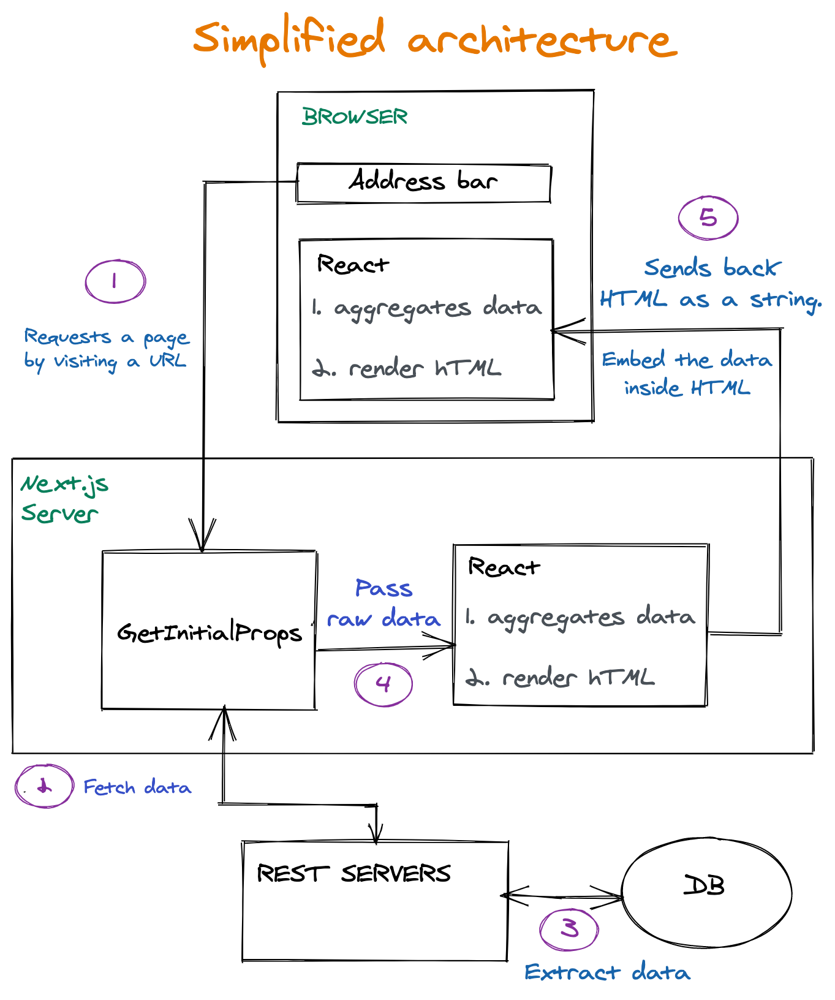
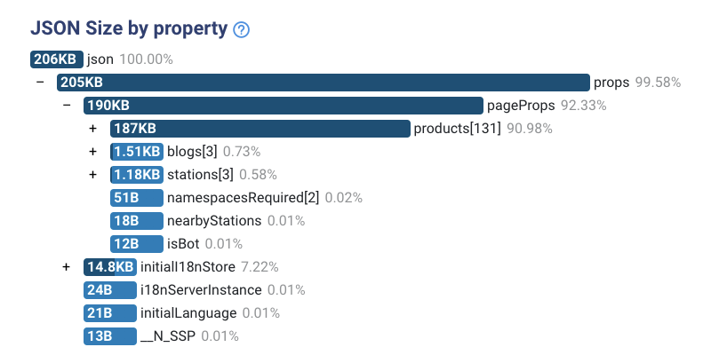
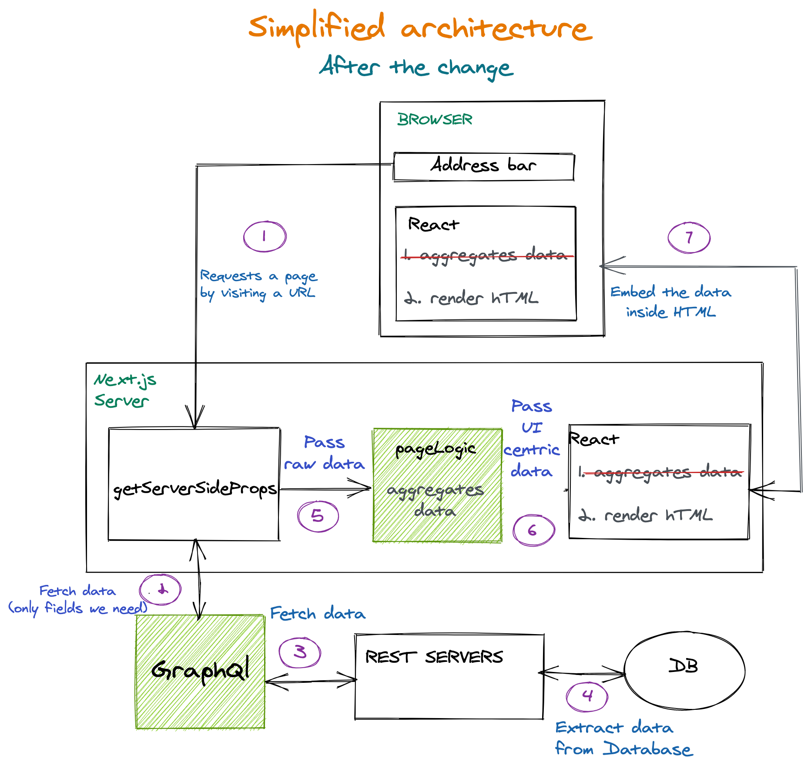
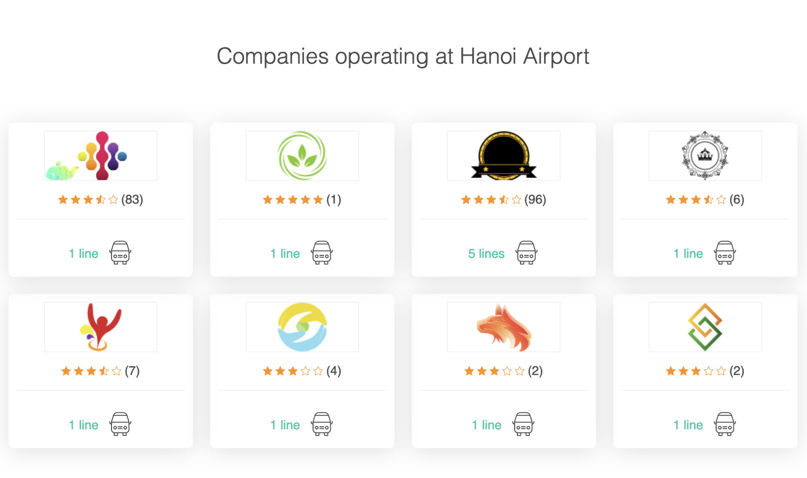

Next.js에서 HTML 페이로드 줄이기 (사례 연구)
원문: https://www.smashingmagazine.com/2021/05/reduce-data-sent-client-nextjs/
빠른 요약
이 글은 Bookaway의 랜딩 페이지 성능에 대한 사례 연구를 다룹니다. Next.js 페이지로 전달되는 props를 어떻게 관리해서 로딩 시간과 웹 바이탈을 향상할 수 있었는지 알아보겠습니다.
여러분이 무슨 생각을 하고 있는지 알고 있습니다. 자바스크립트 의존성을 줄이고 클라이언트에 전송되는 번들 크기를 줄이는 것을 다룬 다른 글이 있습니다. 하지만 이 글은 조금 다르다는 걸 약속합니다.
이 글은 Bookaway가 직면한 몇 가지 문제와 전송되는 HTML을 더 작게 만듦으로 우리가(여행 업계의 한 회사로서) 페이지를 최적화한 것에 대한 글입니다. 더 작은 HTML은 구글이 다운로드하고 처리하는 시간이 더 줄어든다는 것을 뜻합니다.
보통 HTML 코드 크기는 문제가 되진 않는데, 데이터가 많지 않은 작은 페이지나 SEO를 지향하지 않는 페이지에서는 더욱 그렇습니다. 하지만, 우리는 데이터베이스에 많은 양의 데이터가 저장되어 있고 수천 개의 랜딩 페이지를 제공해야 하므로 상황이 달랐습니다.
왜 이 정도 규모가 필요한지 의아할 수 있습니다. (Covid-19 이전에) Bookaway는 1,500개의 사업자와 협력하여 63개국에서 2만 개 이상의 서비스를 제공하고 있으며 매년 200%씩 성장했습니다. 2019년에는 연간 50만 장의 티켓을 판매했기 때문에 운영이 복잡했으며 랜딩 페이지를 통해 이를 매력적이고 빠르게 선보여야 했습니다. 구글 봇(SEO)과 실제 고객 모두에게 말이죠.
이 글에서는 다음과 같은 내용을 다룹니다.
HTML 크기가 너무 크다는 것을 어떻게 알게 되었는지
어떻게 그 크기를 줄였는지
이 과정의 이점(예시로 아키텍처 개선, 코드 구성 개선, 구글이 수만 개의 랜딩 페이지를 인덱싱할 수 있도록 올바른 작업 제공, 클라이언트에 더 적은 바이트를 제공 - 특히 연결 속도가 느린 사용자에게 적합).
하지만 가장 먼저, 속도 개선의 중요성에 관해 이야기해 봅시다.
왜 속도 개선이 SEO에 필요할까요?
"Web Vitals"을 볼 텐데요, 특히 LCP를 살펴보겠습니다.
“Largest Contentful Paint(LCP)는 페이지 로드 타임라인 중 페이지의 메인 콘텐츠가 로드된 시점을 나타내므로 사용자가 체감하는 로드 속도를 측정할 수 있는 중요한 사용자 중심 지표입니다. - LCP가 빠르면 사용자가 해당 페이지가 유용할거라고 인지하는 데 도움이 됩니다.”
주요 목표는 LCP를 가능한 작게 하는 것입니다. LCP를 작게 하는 방법의 하나는 사용자가 가능한 작은 HTML을 다운로드하도록 하는 것입니다. 이로써, 사용자는 가장 큰 콘텐츠를 그리는 작업을 최대한 빨리 시작할 수 있습니다.
LCP는 사용자 중심의 지표이지만, 구글에 따르면 이를 줄이는 것은 구글 봇에도 큰 도움이 됩니다.
“웹은 사용할 수 있는 모든 URL을 탐색하고 인덱싱하는 구글의 능력을 초과하는 거의 무한한 공간입니다. 따라서 구글 봇이 어떤 사이트를 탐색하는 데 사용할 수 있는 시간에 한계가 있습니다. 사이트를 탐색하기 위한 구글의 시간과 자원의 양은 사이트의 크롤링 예산이라고 불립니다.” - "Advanced SEO", 구글 검색 센터 문서
크롤링 예산을 개선하는 가장 좋은 기술적 방법의 하나는 구글이 더 짧은 시간 내에 더 많은 작업을 할 수 있도록 돕는 것입니다.
Q: “사이트 속도가 크롤링 예산에 영향을 줍니까? 에러는 어떤가요?”
A: “사이트를 더 빠르게 만들면 사용자 경험이 개선되는 동시에 크롤링 속도도 향상됩니다. 구글봇에게 있어 빠른 사이트는 서버 상태가 양호하다는 신호이고 동일한 수의 접속으로 더 많은 콘텐츠를 가져올 수 있습니다.”
정리하면, 구글봇과 Bookaway 고객은 같은 목표를 가지고 있습니다 - 둘 다 콘텐츠를 빠르게 전달받기를 원합니다. 우리의 데이터베이스는 모든 페이지에 대해 많은 양의 데이터를 포함하고 있기 때문에, 우리는 이를 효율적으로 집계해서 클라이언트에는 작고 가볍게 보내야 합니다.
개선할 수 있는 방법에 대한 조사를 하던 중 HTML에 큰 JSON 이 내장되어 있어 HTML을 뚱뚱하게 만든다는 것을 발견했습니다. 이를 위해서, 리액트 Hydration을 이해해야 합니다.
리액트 Hydration: 왜 HTML에 JSON이 있나요?
이는 서버 사이드 렌더링이 리액트와 Next.js에서 작동하는 방식 때문에 발생합니다.
요청이 서버에 도착하면 - 데이터 컬렉션을 바탕으로 HTML을 생성해야 합니다. 데이터 컬렉션은
getServerSideProps를 통해 반환된 객체입니다.리액트가 데이터를 전달받습니다. 이제 서버에서 작동하기 시작합니다. HTML을 생성하고 전송합니다.
클라이언트가 HTML을 전달받으면, 즉시 눈앞에 그려집니다. 그동안, 리액트 자바스크립트가 다운로드 되고 실행 됩니다.
자바스크립트 다운로드가 끝나면, 리액트가 클라이언트에서 다시 실행 됩니다. HTML을 다시 생성하고 이벤트 리스너를 부착합니다. 이 과정을 hydration이라고 합니다.
리액트가 hydration 처리를 위해 HTML을 다시 생성할 때, 서버에서 사용되는 것과 동일한 데이터 컬렉션이 필요합니다(1. 참고).
이 데이터 컬렉션은 id가
__NEXT_DATA__인 스크립트 태그 안에 JSON을 삽입해 사용될 수 있게 됩니다.
정확히 어떤 페이지에 관해 이야기하고 있나요?
검색 엔진에서 우리 제품을 홍보해야 하므로 랜딩 페이지의 필요성이 대두되었습니다. 사람들은 보통 특정 버스 노선의 이름을 검색하지 않고, "방콕에서 파타야까지 어떻게 가나요?"와 같이 검색합니다. 지금까지 우리는 이런 질문에 답하는 네 가지 유형의 랜딩 페이지를 만들었습니다:
A 도시에서 B 도시
A 도시 역에서 B 도시 역까지 이어져 있는 모든 노선.(예: 방콕에서 파타야까지)
도시
특정 도시를 지나는 모든 노선.(예: 칸쿤)
나라
특정 나라를 지나는 모든 노선.(예: 이탈리아)
역
특정 역을 지나는 모든 노선.(예: 하노이 공항)
이제, 아키텍처에 대해 살펴보겠습니다.
지금 말씀드린 랜딩 페이지를 서비스하는 인프라에 대해 단순하고 고수준으로 살펴보겠습니다.
흥미로운 부분은 4번과 5번입니다.
여기에 낭비되는 부분이 있습니다.

프로세스 핵심 사항요청이
getInitialProps함수에 도달합니다. 이 함수는 서버에서 실행됩니다. 페이지를 구성하는데 필요한 데이터를 가져오는 것이 이 함수의 역할입니다.REST 서버에서 반환된 정제되지 않은 데이터가 그대로 리액트에 전달됩니다.
먼저, 서버에서 실행됩니다. 집계되지 않은 데이터가 리액트로 전송되었으므로 리액트는 UI 컴포넌트에서 사용할 수 있는 데이터로 집계하는 역할도 담당합니다(자세한 내용은 다음 섹션 참조)
HTML이 정제되지 않은 데이터와 함께 클라이언트로 전송됩니다. 그런 다음 리액트는 클라이언트에서도 동일한 작업을 수행하기 위해 다시 시작합니다. hydration이 필요하기 때문입니다(자세한 내용은 다음 섹션 참조). 따라서 리액트는 데이터 집계 작업을 두 번 수행합니다.
페이지 생성 과정을 분석한 결과 HTML에 내장된 큰 JSON을 발견하게 되었습니다. 정확히 얼마나 큰지 말하기는 어렵습니다. 각 역이나 도시마다 서로 다른 데이터 셋을 집계해야 하므로 페이지 마다 약간씩 다릅니다. 그렇지만 인기 있는 페이지에서 JSON 크기는 250kb만큼 클 수도 있습니다. 이후 5kb-15kb 정도의 크기로 축소되었습니다. 상당한 감소입니다. 어떤 페이지에서는 200-200kb 정도가 매달려있었습니다. 이는 정말 큽니다.
큰 JSON은 id가 __NEXT_DATA__ 인 스크립트 태그에 내장되어 있습니다.
<script id="__NEXT_DATA__" type="application/json">
// 큰 JSON
</script>이 JSON을 클립보드에 쉽게 복사하려면 Next.js 페이지에서 아래 스니펫을 사용하시면 됩니다.
copy($("#__NEXT_DATA__").innerHTML);의문이 생깁니다.
왜 이렇게 클까요? 여기에 무엇이 담겨 있나요?
훌륭한 도구인 JSON Size analyzer는 JSON을 처리하는 방법을 알고 있으며 어디가 대부분의 크기를 차지하고 있는지 보여줍니다.
이것은 역 페이지를 조사하던 중에 발견된 최초의 결과입니다.

분석된 결과 두 가지 문제가 있었습니다.
데이터가 집계되지 않았습니다.
HTML에는 세분화된 제품의 전체 목록이 포함되어 있습니다. 그것들은 화면에 그릴 때 필요한 것은 아닙니다. 집계 방법을 위해 필요한 것들입니다. 예를 들어, 이 역을 통과하는 모든 노선의 목록을 가져오고 있습니다. 각 노선에는 공급업체가 있습니다. 하지만 노선 목록을 2개의 공급자로 구성된 배열로 줄여야 합니다. 나중에 예시를 보겠습니다.
불필요한 필드들
각각의 객체를 파헤쳐 보면, 우리가 전혀 필요하지 않은 몇몇 필드를 발견했습니다. 이는 우리가 REST API에서 데이터를 가져오기 때문입니다. 어떤 데이터를 가져오는지 제어할 수 없습니다.
이 두 가지 이슈는 그 페이지들이 아키텍처 변경이 필요하다는 것을 보여주었습니다. 하지만 잠깐. 애초에 HTML에 내장된 데이터 JSON이 필요한 이유는 무엇일까요? 🤔
아키텍처 변경
매우 큰 JSON 문제는 깔끔하고 계층화된 해결책으로 해결해야 했습니다. 어떻게 했을까요? 다음 다이어그램에서 녹색으로 표시된 계층을 추가합니다.

몇 가지 주요 사항:
중복 데이터 집계가 제거되고 Next.js 서버에서 한 번만 수행되도록 통합되었습니다.
Graphql 서버 계층이 추가되었습니다. 이는 우리가 원하는 필드만 얻을 수 있도록 해줍니다. 데이터베이스는 각 엔티티에 대해 더 많은 필드를 사용하여 확장할 수 있지만, 더 이상 영향을 미치지는 않습니다.
PageLogic함수가getServerSideProps에 추가되었습니다. 이 함수는 백엔드 서비스에서 집계되지 않은 데이터를 가져옵니다. 이 기능은 UI 구성요소에 대한 데이터를 집계하고 준비합니다.(서버에서만 실행됩니다).
데이터 흐름 예제
역 페이지에서 이 섹션을 렌더링하고 싶습니다

우리는 주어진 역에서 운영되는 공급자가 누구인지 알아야 합니다.
lines REST 엔드 포인트에서 모든 노선에 대한 정보를 가져와야 합니다. 이것이 우리가 받은 응답입니다(예시 입니다, 실제로는 훨씬 큽니다).
[
{
id: "58a8bd82b4869b00063b22d2",
class: "Standard",
supplier: "Hyatt-Mosciski",
type: "bus",
},
{
id: "58f5e40da02e97f000888e07a",
class: "Luxury",
supplier: "Hyatt-Mosciski",
type: "bus",
},
{
id: "58f5e4a0a02e97f000325e3a",
class: "Luxury",
supplier: "Jones Ltd",
type: "minivan",
},
];보시다시피, 우리는 관련이 없는 필드들을 가지고 있습니다. class와 id는 이 섹션에서 어떤 역할도 하지 않습니다.
그래서 우리는 Graphql 서버를 통해 우리가 필요한 필드만 요청할 것입니다.
그래서 이제 아래처럼 됩니다.
[
{
supplier: "Hyatt-Mosciski",
type: "bus",
},
{
supplier: "Hyatt-Mosciski",
type: "bus",
},
{
supplier: "Jones Ltd",
type: "minivan",
},
];이는 작업하기에 더 쉬운 객체입니다. 더 작고 디버깅하기 쉬우며 서버에서 메모리를 덜 차지합니다. 하지만 아직 집계가 되지는 않았습니다. 이는 실제 렌더링에 필요한 데이터 구조가 아닙니다.
PageLogic 함수로 전송하여 자세한 내용을 확인해 보겠습니다.
[
{ supplier: "Hyatt-Mosciski", amountOfLines: 2, types: ["bus"] },
{ supplier: "Jones Ltd", amountOfLines: 1, types: ["minivan"] },
];이 작은 데이터 컬렉션이 Next.js 페이지로 전송됩니다.
이제 UI 렌더링을 위한 준비가 되었습니다. 더 이상의 사전 준비와 처리가 필요하지 않습니다. 또한 우리가 추출한 초기 데이터 컬렉션과 비교하면 훨씬 작습니다. 우리는 고객에게 이런 식으로 아주 적은 양의 데이터를 보낼 것이기 때문에 이는 중요합니다.
변화의 효과를 측정하는 방법
HTML 크기를 줄이면 다운로드할 비트가 줄어듭니다.
사용자가 페이지를 요청하면, 짧은 시간에 완전한 형태의 HTML을 전달받습니다.
이는 네트워크 패널에서 HTML 리소스의 콘텐츠 다운로드에서 측정할 수 있습니다.
결론
가벼운 리소스를 전송하는 것은 중요한데, 특히 HTML의 경우 더 중요합니다. HTML 이 너무 커지면 성능 예산에 CSS 리소스나 자바스크립트를 추가할 여지가 없어집니다.
대부분의 실제 사용자가 아이폰 12를 사용하지 않고 중간 수준의 네트워크에서 중간 수준의 장치를 사용할 것이라고 가정하는 것이 가장 좋은 방법입니다. 높은 평가를 받은 기사에서 알 수 있듯이 성능 수준이 상당히 엄격한 것으로 나타났습니다.
“네트워크와 브라우저의 발전 덕분에 (기기는 아니지만) "현대적인" 방식으로 구축된 사이트에 대해 글로벌 예산 상한선이 더 관대해졌습니다. 우리는 이제 ~100KiB의 HTML/CSS/폰트와 ~300-350KiB의 JS(gziped)를 사용할 여유가 있습니다. 이 주먹구구식의 제한은 적어도 1~2년은 유지되어야 합니다. 항상 그렇듯이, 악마는 디테일에 있지만, 가장 중요한 것은 변하지 않았습니다. 우리가 최고 장치의 한계까지 디지털 세상을 구축하면, 전 세계 사용자의 80% 이상은 사용하기 어려워집니다.”
성능 효과
느린 3g 쓰로틀링에서 HTML을 다운로드하는 데 걸리는 시간으로 성능 영향을 측정합니다. 이 측정항목은 Chrome 개발자 도구에서 "콘텐츠 다운로드"라고 합니다.
여기 역 페이지 지표의 예시입니다.
| HTML 크기 (gzip 이전) | HTML 다운로드 속도 (느린 3g) | |
|---|---|---|
| 이전 | 370kb | 820ms |
| 이후 | 166 | 540ms |
| 전체 변경 | 240kb 감소 | 34% 감소 |
계층화 해결책
아키텍처 변경에는 다음과 같은 추가 계층이 포함되었습니다.
Graphql 서버: 우리가 원하는 것만 정확하게 가져오도록 도와줍니다.
집계 전용 함수: 서버에서만 실행됩니다.
이런 변경은 순수한 성능 향상 외에도 훨씬 더 나은 코드 구성과 디버깅 경험을 제공합니다.
이제 데이터 축소 및 집계에 관한 모든 처리가 단일 기능으로 중앙 집중화됩니다
UI 기능은 이제 훨씬 더 간단합니다. 집계나 데이터 처리를 하지 않습니다. 단지 데이터를 얻어서 그리기만 합니다.
서버 코드 디버깅은 REST 엔드 포인트에서 불필요한 필드를 생성하지 않고 필요한 데이터만 추출하므로 더 쾌적합니다.